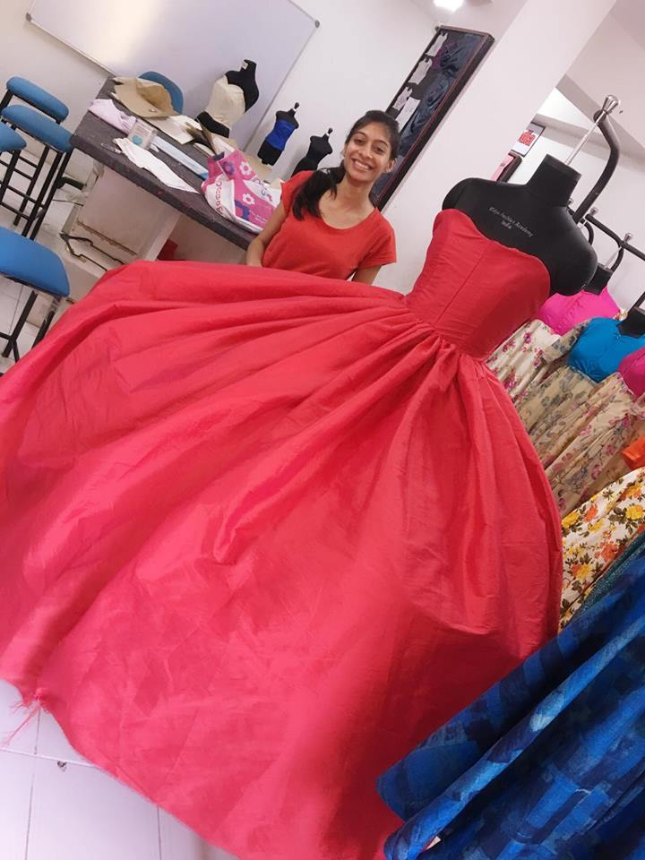

FASHION DESIGNING🥻
"This is the good news for all who want to become Fashion Designer..."

Fashion Designing is one of the most popular Design specialisations among students. Every year thousands of candidates apply for various Fashion Designing courses across the country with an aspiration to become successful fashion designers in the future. The Fashion Design course is available for candidates at undergraduate and postgraduate levels. One of the most creative course options, Fashion Design, is a popular vocational education stream not only in India but abroad.
ABOUT THE COURSE
We are very happy to inform about fashion designing courses.
This course is very useful for poor people because we provide many advantages..

Fashion Design
Free Registration | Low Fee To Learn Course
No Age Limit
New Courses With New Style Of Syllabus
Basics To Advance
Registration underway for NID 2024, last date to apply online is 1-Dec-2023.Admissions Underway at J D Institute of Fashion Technology, Bangalore.CUET 2024 application form expected to be released in the first week of February 2024
IIT Bombay introduces changes in UCEED, CEED 2024 Syllabus
Contact Details Of Company
6303879526 | edurgabhavani436@gmail.com